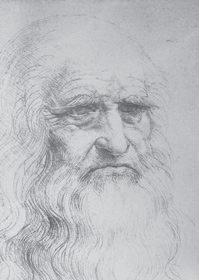
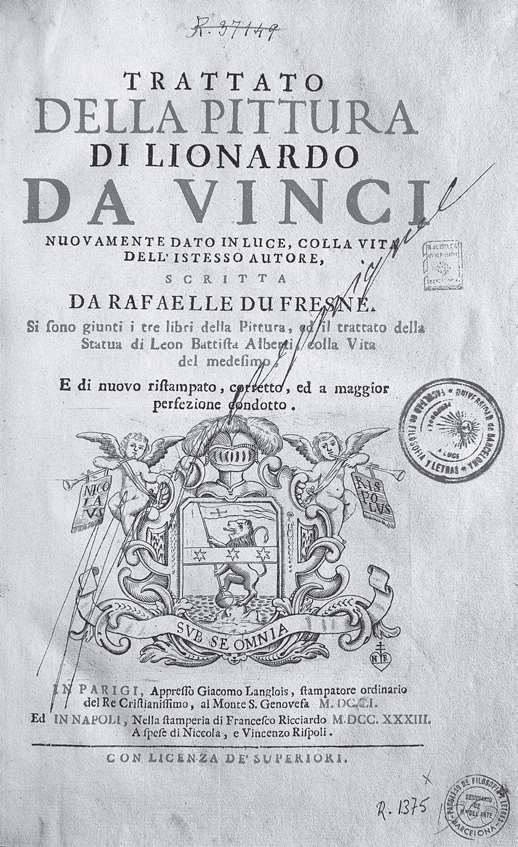
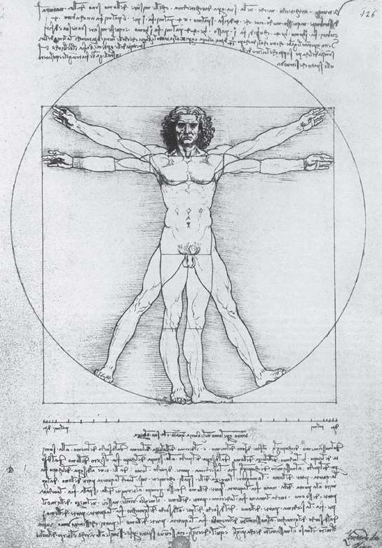

列奥纳多·达·芬奇（1452—1519）是历史上最为杰出的天才之一。他对人类的贡献并不局限于一个领域，而是涉及多个学科：数学、物理、化学、工程、军事技术、绘画、建筑等等。达·芬奇的过人之处在于，他所做的任何事情都很出色，尽管他一生中有些成就已经被忽略，但他所有的贡献早晚都会体现出真正的价值。他是文艺复兴时期的代表人物，兴趣广泛，在各个方面能力出众。达·芬奇经久不衰的魅力不仅是因为他的聪明才智，还源于他的许多优秀品质。简单地说，他超越了其所在的时代。首先，达·芬奇的个性十分与众不同，尤其是在他所处的那个时代。他是素食主义者，左撇子，而且据说是同性恋。他坚信发展永无止境并且全身心地投入其中，即使在实验过程中有出格的行为，甚至违反了法律，达·芬奇也没有丝毫动摇。他发明的暗语让他更加具有传奇色彩。他将文字写成密码，只有在镜子里才能看懂；还有他那神秘的画作，比如著名的《蒙娜丽莎》，至今仍让专家迷惑不解。
达·芬奇的素描和手稿汇集成了十部手抄本，除了存于欧洲不同的博物馆，还有一部成了美国企业家比尔·盖茨的个人收藏，他为此付出了数百万美元。如果我们在任何互联网搜索引擎中输入“列奥纳多·达·芬奇”，就会发现数百万个与他相关的检索结果。
旷世奇才

列奥纳多·达·芬奇的晚年自画像，创作于1513年左右。
1452年，达·芬奇出生在佛罗伦萨附近的芬奇小镇。他是一名公证员的私生子，但与父亲家庭中的其他儿子一起长大。在画家安德烈·德尔·韦罗基奥的工作室做学徒之前，他一直待在佛罗伦萨的父亲家中。1472年，他正式成为一名画家。
达·芬奇的第一个委托来自锡耶纳市政厅的委员会，可是他并没有完成这项工作，最后由菲利皮诺·利皮替他完成。由于与佛罗伦萨的统治者美第奇家族关系紧张，达·芬奇于1486年前往米兰。当时，卢多维科·斯福尔扎公爵统治着米兰，他的理想是让米兰的文化地位超过佛罗伦萨。在服务于斯福尔扎公爵期间，达·芬奇为圣马利亚感恩教堂绘制了《岩间圣母》和壁画《最后的晚餐》。
1500年，卢多维科·斯福尔扎公爵倒台后，达·芬奇先后居住在贝加莫、曼图亚、威尼斯等地，但最终还是回到了佛罗伦萨。1505年，他画了最为著名的《乔康达夫人》（通常称为《蒙娜丽莎》）。因为我们并不知道画中女主人公的身份、表情的含义或是背景的位置，所以这幅画作充满了神秘色彩。
1513年，达·芬奇前往罗马为教皇利奥十世工作，直至1517年教皇去世。等到那时他才接受了法国国王弗朗索瓦一世的邀请前往法国。1519年，达·芬奇在克洛·吕斯城堡去世。据说弗朗索瓦一世在他临终之际亲自陪伴着他。

《绘画论》（Treatise on Painting）的卷首插图，达·芬奇在该书中研究了艺术与数学的关系。
达·芬奇是绘画艺术的理论家，同时坚定地支持将数学融入绘画。《绘画论》开篇第一句话就是：“不是数学家的人请不要阅读我的书。”这部著作大约写于1498年，但直到下个世纪中叶才出版。
达·芬奇为《神圣比例》画过插图，但是帕乔利在书中也提到了达·芬奇对这本书的重要贡献。帕乔利说：“这本书中的锥体以及其他插图都是由我之前提到过的同胞，佛罗伦萨的达·芬奇所绘。他在科学绘画领域取得的成就无人能及。”现在，这些插图连同《维特鲁威人》一起真正成为一种象征，象征着融合了艺术与科学情感的思维方式——人文主义思想。
达·芬奇将人体比例的科学知识应用到了帕乔利和维特鲁威对美的研究中。他的《维特鲁威人》或称《男子比例》将一位男性置于宇宙中心，人物外接一个圆和一个正方形。维特鲁威的全名为马库斯·维特鲁威·波利奥，罗马人，生活在公元前1世纪，是尤利乌斯·恺撒的御用建筑师。达·芬奇正是根据他的描述创作了这幅画。这位罗马建筑师、工程师以及作家在文艺复兴时期再度出名，其所有著作在1486年被翻译出版。在接下来的几十年里，他的许多不同版本的著作在意大利各大重要城市出版发行。文艺复兴时期的建筑将这些书作为新潮流的基础。而达·芬奇经常宣称维特鲁威是他最大的灵感来源。

目前在威尼斯学院美术馆陈列的“完美男子”，即《维特鲁威人》，展示了理想的人体比例，用圆和正方形将比例与几何联系到一起。正方形的边与圆的半径之比为黄金比例。
维特鲁威根据简单的观察确定了人体的尺寸。他认为一个男子的身高等于他的两臂伸开的长度（臂展），如果他平躺下来，手脚伸开，就会形成一个圆。许多画家都尝试将人、正方形、圆形三种形状通过一张图画表现出来，但结果总是不理想。通过让正方形和圆的中心不同，达·芬奇最先找到了一种简洁的方法。生殖器是正方形的中心，肚脐是圆心。在《维特鲁威人》中，理想的人体比例相当于正方形的边与圆的半径之间的比，即黄金比例。所以多亏了黄金比例，艺术与美感才能同几何联系到一起。
理想的尺寸
《维特鲁威人》展示了正常成年人身体比例的近似值，从希腊古典时代开始就成为表现人体艺术的标准。下面我们来详细地解释一下这些比例：
身高=臂展（手臂伸开后两手手指间的距离）=8×手掌长度=6英尺（约合1.83米）=8×面部长度=1.618×肚脐高度（站立时肚脐到地面的距离）。
这样最后得到的比值为1.618，非常接近黄金比例。如果我们要检验自己的身体是否符合这些尺寸，那结果肯定会相当糟糕。对于普通人来说，要想符合理想的人体比例非常困难。毕竟这些比例是一种理想化的美。
要想理解美的理想标准，我们用到的另一种方法是统计学。如果我们将数量庞大的人体测量样本与理想标准进行比较，通常会发现二者的结果非常接近，换句话说，一个人只能在平均状态下才能符合理想的人体比例。比利时数学家兰伯特·阿道夫·奎特莱特（1796—1874）是现代统计学的先驱之一。1871年，他对欧洲男性身体比例的研究完全印证了人体比例的理想标准。
这就产生了一些有趣的问题。对于欧洲以外的印度人、非洲人或中国人来说，应该使用什么样的人体比例标准？
人体尺寸
在公制简化计量单位以前，人们通常使用与人体部位相关的长度进行测量，比如脚、手掌、手指、拇指等。从逻辑上讲，这些长度都来自真实的人体部位。英寸由拇指而来，一英寸等于脚长的1/12。
但并不是所有人的手和脚都有相同的尺寸，那么“标准手脚”从何而来？答案是来自一个团体中最重要的人。举例来说，码是美国和英国仍在使用的一种长度单位，由12世纪的英格兰国王亨利一世定义为在他伸出手臂时，鼻尖到拇指的距离。从那开始，一英尺就定为了1/3码。
当然在所有的文化中，美都是一种理想的标准，但这种标准全都一样吗？通过对不同国家、不同文化背景的人进行考察，结果发现理想的标准大致相同，人类对美的感受大体一致。